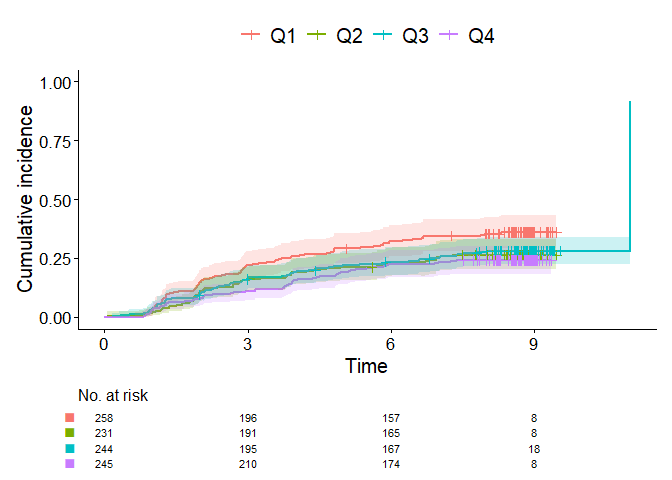
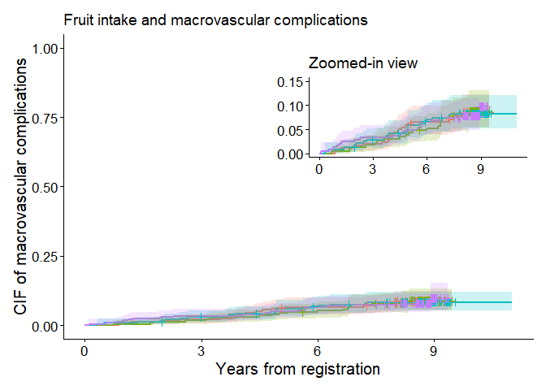
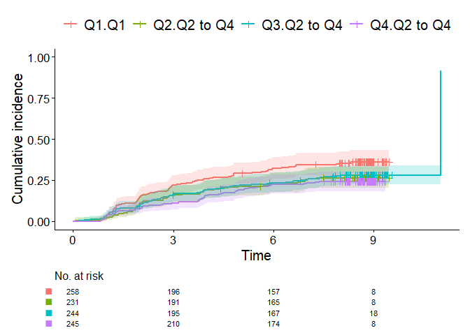
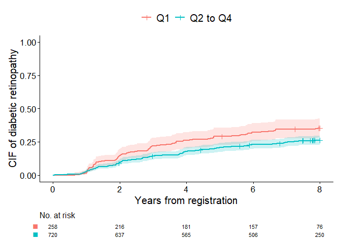
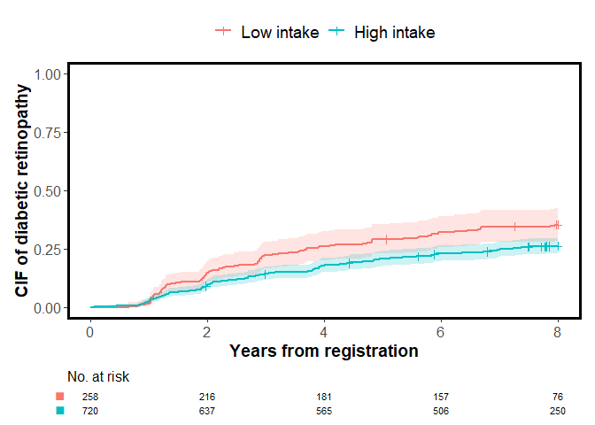
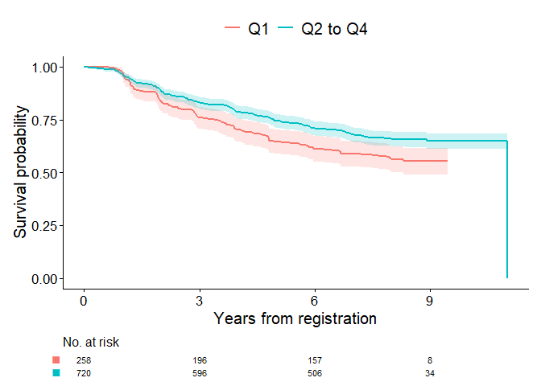

Quick start
This package is a compact and unified toolkit for Kaplan–Meier/Aalen–Johansen curves, visualization, and direct polytomous regression of cumulative incidence functions in R.
library(cifmodeling)
data(diabetes.complications)
cifplot(Event(t,epsilon) ~ fruitq, data=diabetes.complications,
outcome.type="COMPETING-RISK", printEachEvent=TRUE)
This is an example code snippet applying cifplot() to visualize Aalen–Johansen cumulative incidence functions (CIFs). In competing risks data, censoring is often coded as 0, events of interest as 1, and competing risks as 2. The variable epsilon in diabetes.complications data frame represents the occurrence of competing risks according to this coding scheme. By setting printEachEvent=TRUE, the CIF curve for diabetic retinopathy (epsilon=1) is output on the left and macrovascular complications (epsilon=2) on the right.
Overview
In clinical and epidemiological research, analysts often need to handle censoring, competing risks, and intercurrent events (e.g., treatment switching), but existing R packages typically separate these tasks into different interfaces. cifmodeling provides a unified, publication-ready toolkit that integrates description of survival and CIF curves, regression modeling, and visualization for survival and competing risks data. It covers both nonparametric estimation and regression modeling of CIFs, centered around three tightly connected functions.
cifplot()typically generates a survival or cumulative incidence curve with marks that represent censoring, competing risks and intercurrent events. Multiple variance estimators and confidence interval methods are supported. Visualization relies onggsurvfit/ggplot2.cifpanel()generates a multi-panel figure for survival/CIF curves, arranged either in a grid layout or as an inset overlay.polyreg()fits coherent regression models of CIFs based on polytomous log odds products and the stratified IPCW estimator. This function is particularly well-suited for causal inference in terms of typical effect measures, namely risk ratios, odds ratios, and subdistribution hazard ratios, with a competing risks, survival, or binary outcome.
These functions adopt a formula + data syntax, return tidy, publication-ready outputs, and integrate seamlessly with ggsurvfit and modelsummary for visualization.
Installation
The package is implemented in R and relies on Rcpp, nleqslv and boot for the numerical back-end. The examples in this README also use ggplot2, ggsurvfit, patchwork and modelsummary for tabulation and plotting. Install the core package and these companion packages with:
install.packages("Rcpp")
install.packages("nleqslv")
install.packages("boot")
install.packages("ggplot2")
install.packages("ggsurvfit")
install.packages("patchwork")
install.packages("modelsummary")
devtools::install_github("gestimation/cifmodeling")Interoperability
There are several excellent R packages for survival and competing-risk analysis. The survival package provides the canonical API for time-to-event data (e.g., survival and mets). In combination with ggsurvfit, you can produce publication-ready survival plots. For cumulative incidence (CIF) plots, integration in the general ecosystem is not as streamlined; cifmodeling fills this gap by offering cifplot() for survival/CIF plots and multi-panel figures via a single, unified interface.
If you need fine-grained plot customization, compute the estimator and keep a survfit-compatible object with cifcurve() (or supply your own survfit object) and then style it using ggsurvfit/ggplot2 layers. In other words, use cifcurve() for estimation, cifplot()/cifpanel() for quick high-quality figures, and fall back to the ggplot ecosystem when you want full artistic control.
For interval estimation, cifcurve() mirrors the confidence-interval options of survival::survfit() for survival curves and adds delta and aalen options for CIFs. The defaults in cifmodeling are chosen from external and internal simulation evidence; they should be sensible for most applications, while still allowing experts to override them when needed.
mets package is a more specialized toolkit that provides advanced statistical methods for competing risk analysis. cifmodeling::polyreg() focuses on coherent modeling of all CIFs simultaneously using polytomous log odds products to estimate RR/OR/SHR at user-specified times; this coherence can come with longer runtimes on large problems. If you prefer fitting separate regression models for each competing event or need Fine–Gray specifically, mets::cifreg() (and mets::binreg() for RR and OR estimation) are excellent choices.
Quality control
cifmodeling includes an extensive test suite built with testthat, ensuring the numerical accuracy and graphical consistency of all core functions (cifcurve, cifplot, cifpanel, and polyreg). The package is continuously tested on GitHub Actions (Windows, macOS, Linux) to maintain reproducibility and CRAN-level compliance.
Main functions
cifplot()
This function produces the Kaplan–Meier survival or Aalen–Johansen cumulative incidence curve from a unified formula + data interface. It auto-labels axes based on outcome.type and type.y ("risk" for 1-survival or CIF), can add censoring/competing-risk/intercurrent-event marks, and returns a regular ggplot object (compatible with + and %+%). You may also pass a survfit-compatible object directly.
Typical use cases
- Draw one survival/CIF curve set by exposure groups (e.g., treatment vs control).
- Call
cifpanel()with a simplified code to create a panel displaying plots of multiple stratified survival/CIF curves or CIF curves for each event type. - Add confidence intervals and censor/competing-risk/intercurrent-event marks.
- Add a risk table to display the number at risk or the estimated survival probabilities or CIFs and 95% confidence intervals at each point in time.
Key arguments shared with cifcurve()
-
Outcome type and estimator
-
formulaA model formula specifying the time-to-event outcome on the left-hand side (Event(time, status)orSurv(time, status)) and, optionally, a stratification variable on the right-hand side. -
outcome.type = "SURVIVAL"→ Kaplan–Meier estimator -
outcome.type = "COMPETING-RISK"→ Aalen–Johansen estimator
-
-
Confidence intervals
-
conf.intsets the two-sided level (default 0.95)
-
conf.typechooses the transformation ("arcsine-square root","plain","log","log-log","logit", or"none") -
errorchooses the estimator for standard error ("greenwood"or"tsiatis"for survival curves and"delta"or"aalen"for CIFs)
-
Key arguments for cifplot()
-
Data visualization
-
addConfidenceIntervaladds confidence intervals on the ggplot2-based plot -
addCompetingRiskMarkandaddIntercurrentEventMarkadd symbols to describe competing risks or intercurrent events in addition to conventional censoring marks withaddCensorMark -
addRiskTableadds numbers at risk -
addEstimateTableadds estimates and 95% confidence interval -
addQuantileLineadds a line that represents median or quantile
-
-
Plot customization
-
type.ychooses y-axis ("surv"for survival and"risk"for 1-survival or CIF) -
limits.x,limits.y,breaks.x,breaks.ynumeric vectors for axis control -
stylespecifies the appearance of plot ("CLASSIC","BOLD","FRAMED","GRID","GRAY"or"GGSURVFIT")
-
-
Panel display
-
printEachVarproduces multiple survival/CIF curves per stratification variable specified in the formula -
printEachEventproduces CIF curves for each event type -
printCensoringproduces KM-type curves for (event, censor) and (censor, event) so that censoring patterns can be inspected -
panel.modeuses automatic panel mode
-
Return
- A ggplot object.
Under the hood: cifcurve()
cifplot() is a streamlined, opinionated wrapper around cifcurve(), which calculates the Kaplan–Meier estimator and the Aalen–Johansen estimator. cifcurve() returns a survfit-compatible object, enabling an independent use of standard methods such as:
-
summary()— time-by-time estimates with standard errors and confidence intervals -
plot()— base R stepwise survival/CIF curves -
mean()— restricted mean survival estimates with confidence intervals -
quantile()— quantile estimates with confidence intervals
Furthermore, the cifmodeling package provides a workflow for a ggplot2-based visualization based on the survfit-compatible objects by passing them to cifplot() and cifpanel.
cifpanel()
cifpanel() arranges multiple cifplot()/cifcurve() results into a unified grid layout with consistent scales, shared legend, and synchronized themes. It is ideal for visual comparison across outcomes, time scales, or strata. The inset feature also allows you to display another plot within a plot.
Typical use cases - Compare CIF (event 1) vs CIF (event 2) in a 1×2 layout.
Compare survival/CIF curves across strata with a shared legend and matched axes.
Display a plot with an enlarged y-axis within a plot scaled from 0 to 100%.
Key arguments
-
formulaorformulas— one formula or a list of formulas; each entry creates a panel. -
data,outcome.type,code.events,type.y— recycled across panels unless a list is supplied for per-panel control. -
rows.columns.panel— selects grid layout by c(rows, cols). -
inset.panel— selects inset layout. -
title.panel,subtitle.panel,caption.panel,title.plot— overall titles and captions. -
tag.panel— panel tag style (e.g., “A”, “a”, “1”). -
label.x,label.y,limits.x,limits.y,breaks.x,breaks.y— shared axis control unless a list is supplied for per-panel control.
Return
- A patchwork object (still ggplot-compatible).
An example of usage
In the first example, cifplot() called cifpanel() to combine multiple plots. cifpanel() is a function for creating a panel with multiple plots like this. cifpanel() can also display one plot inside another. The cumulative incidence probability for macrovascular complications is low, making it difficult to discern differences between groups. The following code uses inset.panel= to display plot output2, with an enlarged vertical axis, inside plot output1. The position and size of the zoomed-in-view panel is specified by inset.left, inset.bottom, inset.right, and inset.top.
output1 <- cifplot(Event(t,epsilon) ~ fruitq,
data = diabetes.complications,
outcome.type="COMPETING-RISK",
code.event1=2,
code.event2=1,
addConfidenceInterval = FALSE,
addRiskTable = FALSE,
label.y="CIF of macrovascular complications",
label.x="Years from registration")
output2 <- cifplot(Event(t,epsilon) ~ fruitq,
data = diabetes.complications,
outcome.type="COMPETING-RISK",
code.event1=2,
code.event2=1,
addConfidenceInterval = FALSE,
addRiskTable = FALSE,
label.y="",
label.x="",
limits.y=c(0,0.15))
#> [1] "type.y in c"
#> NULL
output3 <- list(a=output1, b=output2)
cifpanel(plots = output3,
title.plot = c("Fruit intake and macrovascular complications", "Zoomed-in view"),
inset.panel = TRUE,
inset.left = 0.40, inset.bottom = 0.45,
inset.right = 1.00, inset.top = 0.95,
inset.legend.position = "none",
legend.position = "bottom")
The code below, in which a formula and data is given directly, produces the same output as above.
cifpanel(
title.plot = c("Fruit intake and macrovascular complications", "Zoomed-in view"),
inset.panel = TRUE,
formula = Event(t, epsilon) ~ fruitq,
data = diabetes.complications,
outcome.type = "COMPETING-RISK",
code.events = list(c(2,1,0), c(2,1,0)),
label.y = c("CIF of macrovascular complications", ""),
label.x = c("Years from registration", ""),
limits.y = list(c(0,1), c(0,0.15)),
inset.left = 0.40, inset.bottom = 0.45,
inset.right = 1.00, inset.top = 0.95,
inset.legend.position = "none",
legend.position = "bottom",
addConfidenceInterval = FALSE
)polyreg()
polyreg() implements log odds product modeling for CIFs at user-specified time points, focusing on multiplicative effects of a categorical exposure, or constant effects over time like Cox regression and Fine-Gray models. It estimates multiplicative effects such as risk ratios, odds ratios, or subdistribution hazard ratios, while ensuring that the probabilities across competing events sum to one. This is achieved through reparameterization using polytomous log odds products, which fits so-called effect-measure models and nuisance models on multiple competing events simultaneously. Additionally, polyreg() supports direct binomial regression for survival outcomes and the Richardson model for binomial outcomes, both of which use log odds products.
The function follows the familiar formula + data syntax with Event() or Surv() and outputs tidy results, including point estimates, standard errors, confidence intervals, and p-values. Its results can be easily summarized with summary() or combined with tools such as modelsummary or broom for reporting.
Key arguments
-
nuisance.model— a formula describing the outcome and nuisance covariates, excluding the exposure of interest. -
exposure— specifies the exposure variable. This argument accepts one binary or categorical variable. -
effect.measure1andeffect.measure2— specifies the effect measures for event1 and event2 ("RR","OR"or"SHR"). -
outcome.typeselects the outcome type ("COMPETING-RISK","SURVIVAL","BINOMIAL","PROPORTIONAL-SURVIVAL"or"PROPORTIONAL-COMPETING-RISK"). -
time.point— specifies time points at which the exposure effect is evaluated. Required for"COMPETING-RISK"and"SURVIVAL"outcomes. -
strata— specifies the stratification variable used to adjust for dependent censoring.
Return
coefficient— regression coefficientscov— variance-covariance matrix for regression coefficientsdiagnostic.statistics— a data frame containing inverse probability weights, influence functions, and predicted potential outcomessummary— a summary of estimated exposure effects
Example1. Unadjusted competing risks analysis
For the initial illustration, unadjusted analysis focusing on cumulative incidence of diabetic retinopathy (event 1) and macrovascular complications (event 2) at 8 years of follow-up is demonstrated. To visualize each covariate separately when multiple strata are supplied, set printEachVar = TRUE. Each variable on the right-hand side is plotted in its own panel, and the layout can be controlled with rows.columns.panel. The figure below contrasts the cumulative incidence curves of diabetic retinopathy for quartile fruitq1 and a binary exposure fruitq1, low (Q1) and high (Q2 to 4) intake of fruit, generated by cifplot(). The addConfidenceInterval=TRUE argument adds confidence intervals to the plot. This helps visualize the statistical uncertainty of estimated probabilities across exposure levels. When using numeric variables for stratification, discretize them beforehand with cut() or factor(). The labels of x-axis (Time) and y-axis (Cumulative incidence) in these panels are default labels.
data(diabetes.complications)
diabetes.complications$fruitq1 <- ifelse(
diabetes.complications$fruitq == "Q1","Q1","Q2 to Q4"
)
cifplot(Event(t,epsilon)~fruitq+fruitq1, data=diabetes.complications,
outcome.type="COMPETING-RISK",
addConfidenceInterval=TRUE, addCensorMark=FALSE,
addCompetingRiskMark=FALSE, printEachVar = TRUE)
In the second graph, censoring marks are added along each curve (addCensorMark = TRUE) to indicate individuals who were censored before experiencing any event. These marks visualize the timing and frequency of censoring, allowing a clearer understanding of loss-to-censoring patterns over follow-up. Here the workflow differs slightly from the previous code. First, we compute a survfit-compatible object output1 using cifcurve() with outcome.type="COMPETING-RISK" by calculating Aalen–Johansen estimator stratified by fruitq1. Then, cifplot() is used to generate the figure. The label.x and label.y arguments are also used to customize the axis labels.
output1 <- cifcurve(Event(t,epsilon)~fruitq1, data=diabetes.complications,
outcome.type="COMPETING-RISK")
cifplot(output1, addConfidenceInterval=FALSE, addRiskTable=FALSE,
addCensorMark=TRUE, addCompetingRiskMark=FALSE,
label.y="CIF of diabetic retinopathy", label.x="Years from registration")
Next, competing risk marks are added (addCompetingRiskMark = TRUE) to indicate individuals who experienced the competing event (macrovascular complications) before diabetic retinopathy. The time points at which the macrovascular complications occurred were obtained as output2 for each strata using a helper function extract_time_to_event(). These symbols help distinguish between events due to the primary cause and those attributable to competing causes. Note that the names of competing.risk.time and intercurrent.event.time must match the strata labels used in the plot if supplied by the user.
output2 <- extract_time_to_event(Event(t,epsilon)~fruitq1,
data=diabetes.complications, which_event="event2")
cifplot(output1, addConfidenceInterval=FALSE, addRiskTable=FALSE,
addCensorMark=FALSE, addCompetingRiskMark=TRUE, competing.risk.time=output2,
label.y="CIF of diabetic retinopathy", label.x="Years from registration")
label.strata is an argument for customizing labels, but when inputting a survfit object, it becomes invalid because it does not contain stratum information. Therefore, the following code inputs the formula and data. label.strata is used by combining level.strata and order.strata. level.strata specifies the levels of the stratification variable corresponding to each label in label.strata. The levels specified in level.strata are then displayed in the graph in the order defined by order.strata. A graph enclosed in a square was generated, which is due to style="FRAMED" specification.
cifplot(Event(t,epsilon)~fruitq1, data=diabetes.complications,
outcome.type="COMPETING-RISK", addConfidenceInterval=FALSE, addRiskTable=FALSE,
addEstimateTable=TRUE, addCensorMark=FALSE, addCompetingRiskMark=TRUE,
competing.risk.time=output2, label.y="CIF of diabetic retinopathy",
label.x="Years from registration", label.strata=c("High intake","Low intake"),
level.strata=c("Q2 to Q4","Q1"), order.strata=c("Q1", "Q2 to Q4"), style="FRAMED")
By specifying addEstimateTable=TRUE, the risks of diabetic retinopathy (estimates for CIFs) along with their confidence interval are shown in the table at the bottom of the graph. The risk ratios at a specific time point for competing events can be jointly and coherently estimated using polyreg() with outcome.type="COMPETING-RISK". In the code of polyreg() below, no covariates are included in the nuisance model (~1 specifies intercept only). The effect of low fruit intake fruitq1 is estimated as an unadjusted risk ratio (effect.measure1="RR") for diabetic retinopathy (event 1) and macrovascular complications (event 2) at 8 years (time.point=8).
output3 <- polyreg(nuisance.model=Event(t,epsilon)~1, exposure="fruitq1",
data=diabetes.complications, effect.measure1="RR", effect.measure2="RR",
time.point=8, outcome.type="COMPETING-RISK",
report.nuisance.parameter=TRUE)
print(output3$coefficient)
#> [1] -1.38313159 -0.30043942 -3.99147406 -0.07582595
print(output3$cov)
#> [,1] [,2] [,3] [,4]
#> [1,] 0.017018160 -0.012351309 0.009609321 -0.008372500
#> [2,] -0.012351309 0.012789187 -0.006012254 0.006540183
#> [3,] 0.009609321 -0.006012254 0.048161715 -0.044070501
#> [4,] -0.008372500 0.006540183 -0.044070501 0.055992232The summaries of analysis results in the list of outputs (e.g. output3$summary below) are compatible with the modelsummary ecosystem, which makes it easy to create publication-ready tables in a variety of formats. A typical workflow is to pass the summary element of a polyreg() fit (or a list of such fits) to modelsummary::msummary(). In this case, all regression coefficients are included in summary by setting report.nuisance.parameter = TRUE. Model summaries can also be exponentiated to display risk ratios, odds ratios, or subdistribution hazard ratios using exponentiate option. The summaries can be displayed in the Viewer with customized statistics such as p-values or confidence intervals.
msummary(output3$summary, statistic = c("conf.int", "p.value"), exponentiate = TRUE)| event1 | event2 | |
|---|---|---|
| Intercept | 0.251 | 0.018 |
| [0.194, 0.324] | [0.012, 0.028] | |
| (<0.001) | (<0.001) | |
| fruitq1, Q2 to Q4 vs 0 | 0.740 | 0.927 |
| [0.593, 0.924] | [0.583, 1.474] | |
| (0.008) | (0.749) | |
| effect.measure | RR at 8 | RR at 8 |
| n.events | 279 in N = 978 | 79 in N = 978 |
| median.follow.up | 8 |
|
| range.follow.up | [ 0.05 , 11 ] |
|
| n.parameters | 4 |
|
| converged.by | Converged in objective function |
|
| nleqslv.message | Function criterion near zero |
|
Example 2. Survival analysis
The second example is time to first event analysis (outcome.type="SURVIVAL") to estimate the effect on the risk of diabetic retinopathy or macrovascular complications at 8 years. In the code below, cifplot() is directly used to generate a survfit-compatible object internally and plot it.
diabetes.complications$d <- as.integer(diabetes.complications$epsilon>0)
cifplot(Event(t,d)~fruitq1, data=diabetes.complications,
outcome.type="SURVIVAL", addConfidenceInterval=TRUE, addCensorMark=FALSE,
addCompetingRiskMark=FALSE, label.y="Survival probability",
label.x="Years from registration", label.strata=c("High intake","Low intake"))
The code below specifies the Richardson model on the risk of diabetic retinopathy or macrovascular complications at 8 years (outcome.type=“SURVIVAL”). Dependent censoring is adjusted by stratified IPCW method (strata='strata'). Estimates other than the effects of exposure (e.g. intercept) are suppressed when report.nuisance.parameter is not specified.
output4 <- polyreg(nuisance.model=Event(t,d)~1,
exposure="fruitq1", strata="strata", data=diabetes.complications,
effect.measure1="RR", time.point=8, outcome.type="SURVIVAL")
msummary(output4$summary, statistic=c("conf.int", "p.value"), exponentiate=TRUE)| event 1 (no competing risk) | |
|---|---|
| fruitq1, Q2 to Q4 vs 0 | 0.777 |
| [0.001, 685.697] | |
| (0.942) | |
| effect.measure | RR at 8 |
| n.events | 358 in N = 978 |
| median.follow.up | 8 |
| range.follow.up | [ 0.05 , 11 ] |
| n.parameters | 2 |
| converged.by | Converged in objective function |
| nleqslv.message | Function criterion near zero |